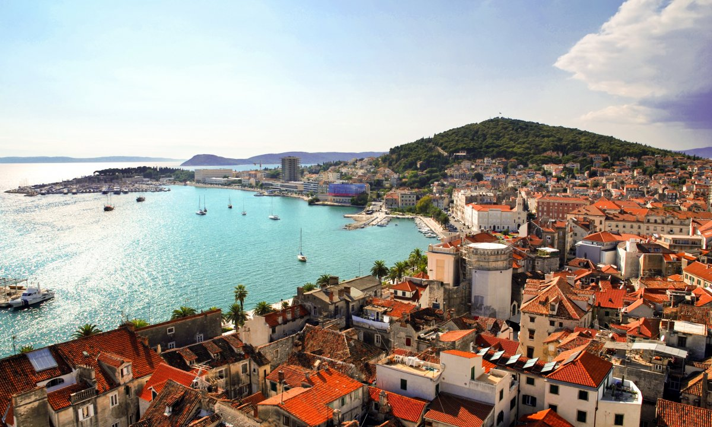

Моїм улюбленим містом є Спліт — місто в Хорватії з багатою більш ніж 1700-річною історією. Найбільше місто Далмації і друге за величиною місто країни після столиці — Загреба. Центр відомого курортного регіону, знаходиться в центральній частині узбережжя Адріатики між містами Задар і Дубровник. Населення 178 102 осіб (2011). Місто розташоване на півострові Мар'ян між затокою Каштела і Сплітським каналом біля підніжжя Мосорських гір (найвища вершина — Мосор, 1330 метрів). Сучасний Спліт — місто, що динамічно розвивається. Населення зайняте в туристичному сервісі, торгівлі, харчовій промисловості, рибальстві та рибопереробці, виноробстві, виробництві добрив, суднобудуванні, видобутку та обробці вапняку. Значне число містян працює в портах, пасажирському і вантажному транспорті.
Читати про Спліт тут.